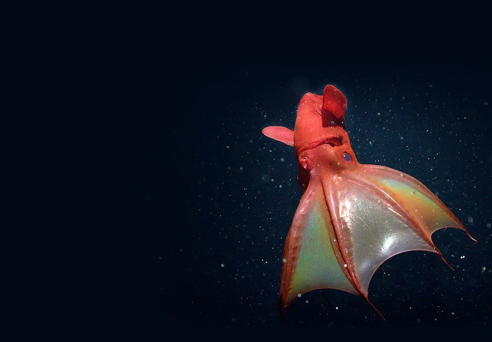

Адский вампир, или адский кальмар-вампир
Биологичка мной гордилась бы, хпх.

Кратко о классификации вампиров:
Царство животные
Тип Моллюски
Класс Cephalopoda (головоногие)
Надотряд Восьмирукие
Oтряд Vampyromorphida (вампироморфы)
Адский вампир (единственный представитель)
Так же строение тела адского вомпера:
Вомпер
Головонога (все тело)
Фотофоры (органы свечения)
Пара глаз
Белый клюв
Соединительная ткань
Две сумки
Чувствительные велярные жгутики
Пара ухообразных плавников
8 щупалец
Мягкие иглы и усики
Присоски
Так же, они небольшие: до 30 см, но обычно где-то 15 см. И вообще, вомперы лапуси. Любите вомперов. ʕ ᵔᴥᵔ ʔ